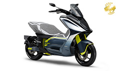

At Yamaha, we have always placed people at the center, creating methods of mobility that foremost value human feelings, sensations and experiences, and thereby bring users real fulfillment.
Even today, as the doors of a new mobility revolution are opening, we know that if we stay true to the path we have followed to this day, Yamaha will move forward in the right direction for the future of personal mobility.
So we shall make a proclamation: the real mobility revolution for us lies in a different space, one separate
from creating modes of transportation for greater convenience and efficiency.
It is a revolution to ensure that the sensations and experiences that make us human remain at the core of
mobility to come.
Our Long-Term Vision of ART for Human Possibilities puts forward the hypothesis that if we can solve the multitude of issues facing our world and enable diverse means for self-fulfillment through technologies that build on our capabilities as humans, then there is greater joy for us yet to come.
The future of mobility at Yamaha can be seen here today.
The technology we have—and have yet to create—is how we can make that future better and better, because we
believe that there is indeed, still greater joy yet to come for all of us.
October 30, 2019
Events "Tokyo Motor Show 2019" released
October 23, 2019
The Yamaha Motor Booth at the 46th Tokyo Motor Show 2019“There Is Greater Joy Yet to Come”
YAMAHA MW-VISION

Tricity300
Land Link Concept

E01

E02
YPJ-YZ
YZF-R1
Ténéré700
View All Models
© Yamaha Motor Co., Ltd.

share on Facebook
share on Twitter